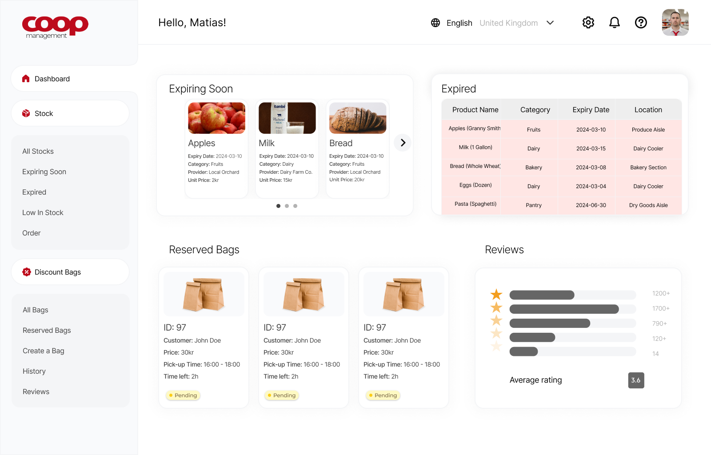
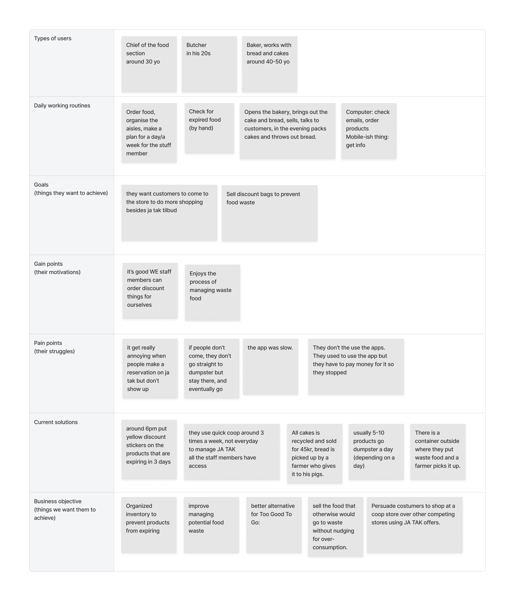
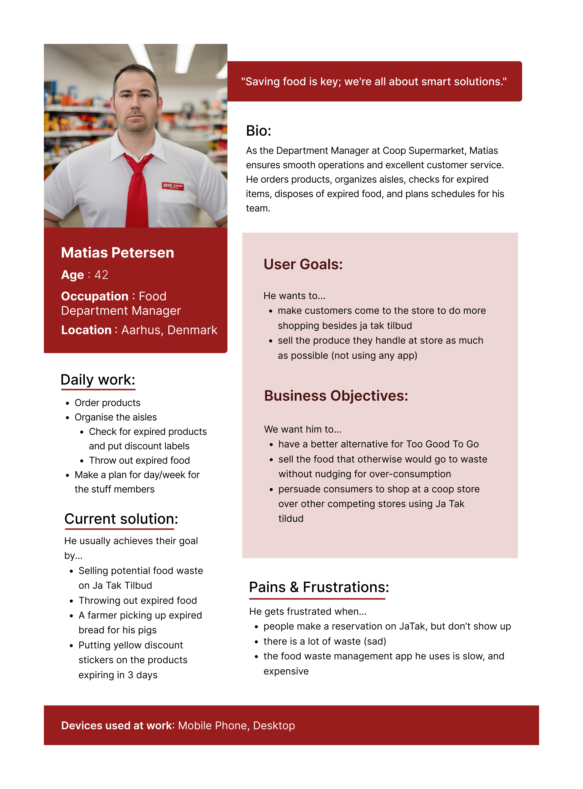
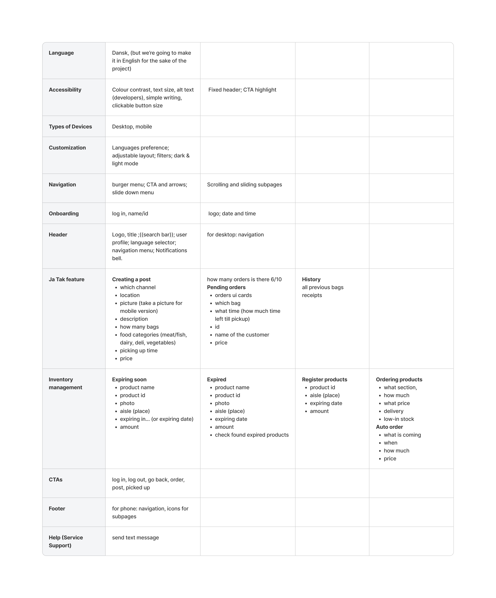
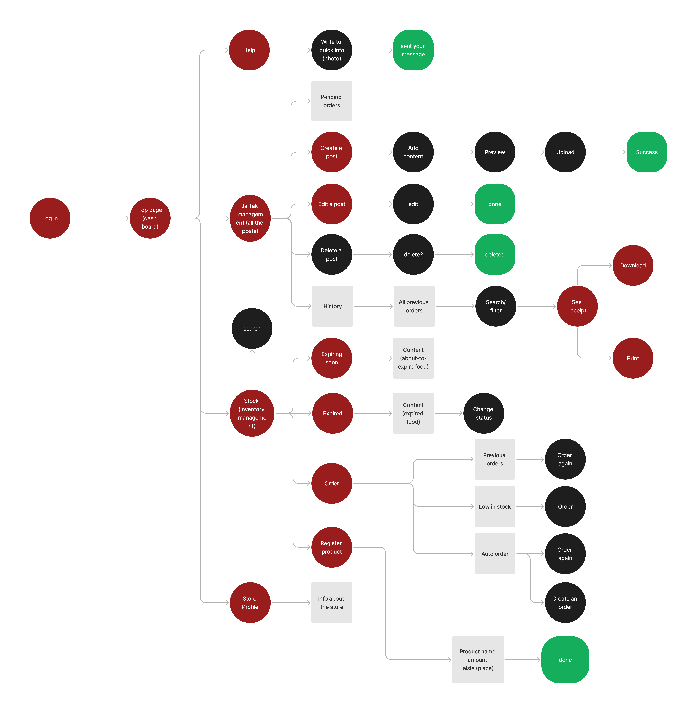
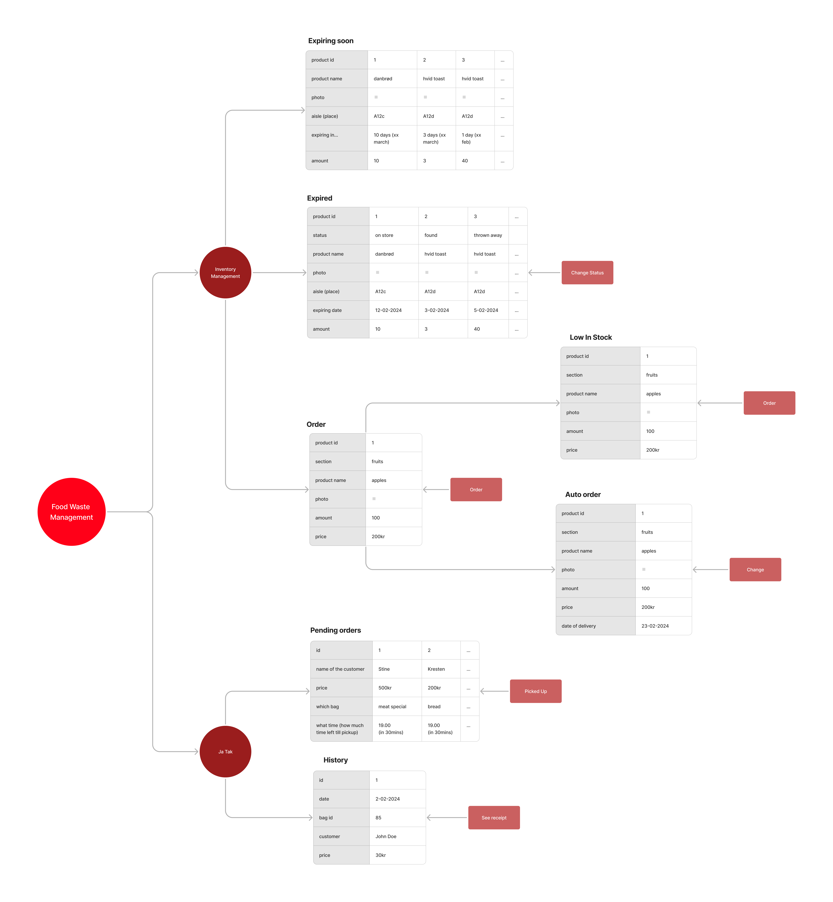
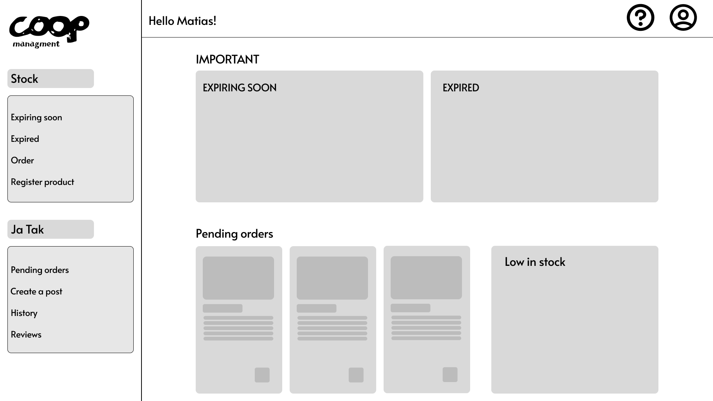
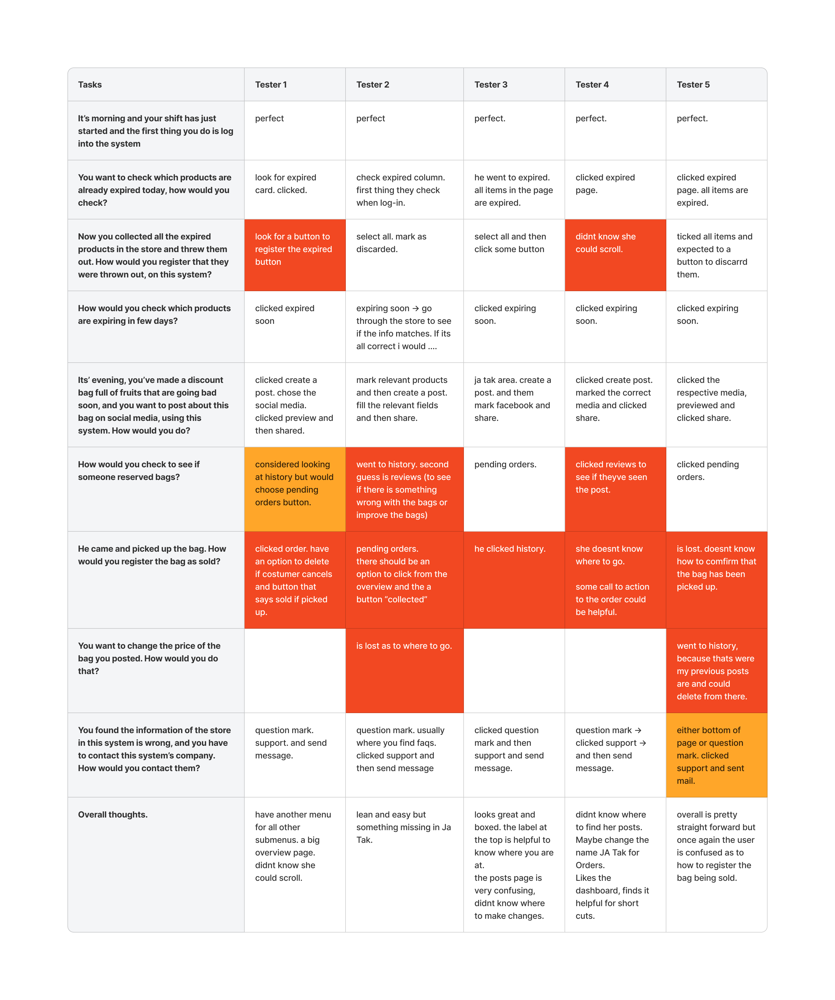
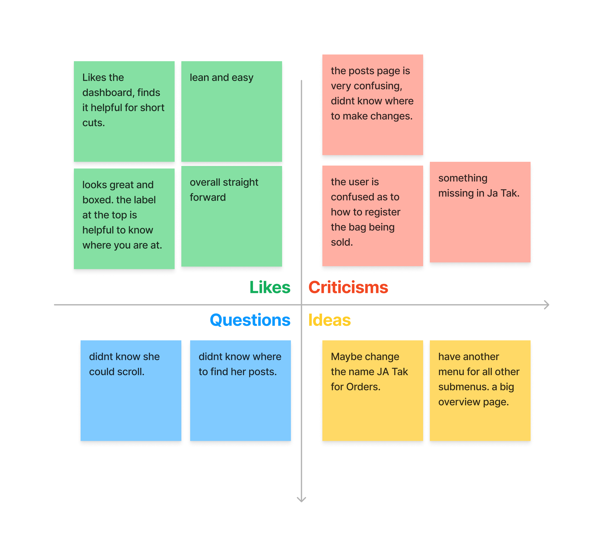
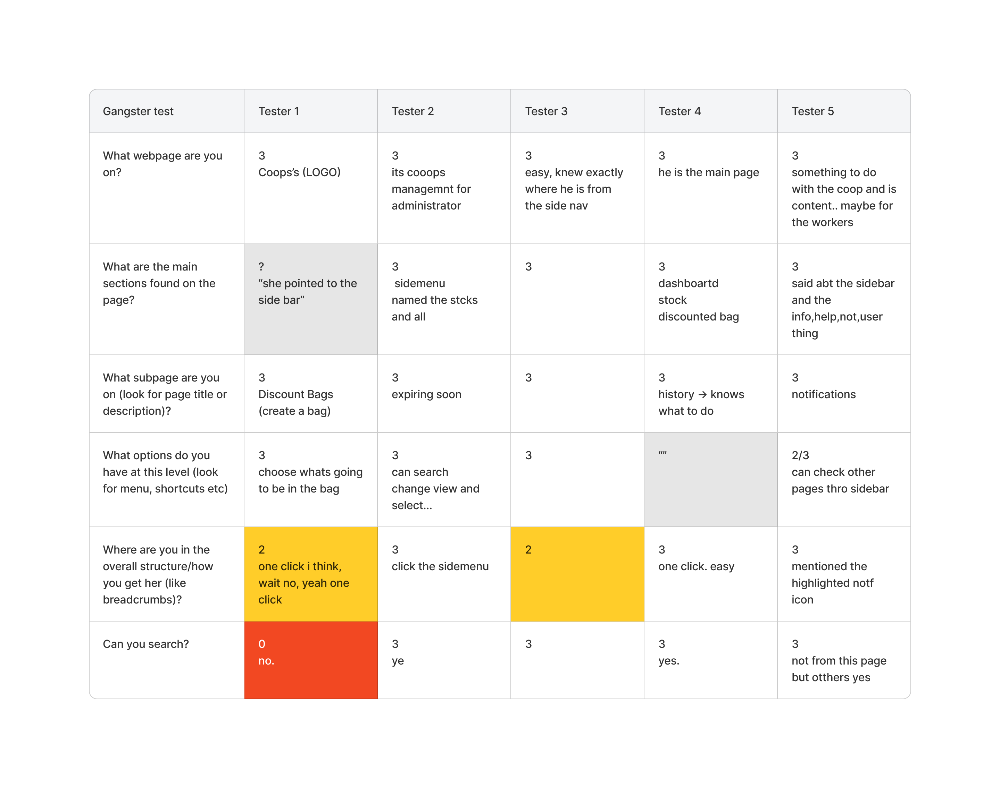

Coop Management
🕒 4 weeks, ✏️ Researcher & UX designer
Our initial aim was to create an alternative for Too Good To Go, but it ended up an inventory management system designed to reduce food waste at stores.

Challenges
Too Good to Go allows businesses to sell surplus food in discount bags, aiming to reduce food waste. However, criticism has grown over its profit-driven model and 30% commission fees, potentially promoting overconsumption.
Our goal: Enhance our web app for B2B clients, engaging their local B2C audience and selling surplus food sustainably.
Research
To better understand our target audience’s needs and how they interact with our solution, we conducted semi-structured interviews with supermarket staff.
Through this process, we identified key issues:
- Manually checking expiring/expired food is time-consuming
- Staff become frustrated when customers reserve ‘Ja Tak tilbud’ bags but do not show up to pick them up, especially in the evenings.
We interviewed Kvickly Viby J employees in the bakery, meat, and produce sections to understand their needs and priorities. Using open-ended questions, we followed qualitative research design principles, letting interviewees guide the conversation.
Following our desk research and interviews, we analysed the data using an Affinity Diagram. We found that employees are frustrated with manual expiration checks, unpicked ‘Ja Tak tilbud’ bags, slow app performance, and a expensive discount bag-selling app.

Click to enlarge
Using insights from the Affinity Diagram, we created a User Persona, Matias Petersen, who represents our target audience. His objectives and frustrations guided our focus of whom we were making this solution for.
Considering his goals of managing stocks and selling surplus food, we decided to create a combination of a stock management and a discount bag platform.

Click to enlarge
We looked up some existing products and their UI patterns to gain inspiration and understand the conventions of food inventory management systems.
We’ve compiled a comprehensive list of solution requirements based on our previous findings. This will serve as a blueprint for designing the website. Using a solid grasp of our target audience and the problem, we started to develop an effective solution.

Click to enlarge
Prototyping and testing
We researched existing products and their UI patterns to gain inspiration and understand the conventions of food inventory management systems.
Following this, we developed a prototype and conducted tests, including Think-aloud and Gangster tests, to check the function.
Before building prototyping, we created a User Flow to organise how users would navigate the website to access the information they require.

Click to enlarge
To structure the elements listed for various pages, we developed Object-Oriented User Experience (OOUX) schemes. These schemes organise and prioritise elements to enhance user navigation and interaction.

Click to enlarge
We designed a Lo-Fi prototype using Figma, focusing more on functionality and user flow rather than visual aesthetics. This approach allows for easier modification after identifying flow flaws during usability testing.

Click to enlarge
We conducted usability testing sessions on the Lo-Fi prototype to ensure that the functions were working as we intended.
During the test, we followed the “Think Aloud” method to understand why and where the testers were having trouble finding the right information and what was causing confusion. We asked 5 people to test the solution, since this number is the “sweet spot” to identify any crucial defects.

Click to enlarge
After conducting tests, we created a grid to capture feedback. This would help us organise and better understand what changes had to be made in the coming Hi-Fi prototype based on the users’ likes, criticisms, questions, and ideas

Click to enlarge
In addition, we conducted a Gangster test, in order to check if the site navigation is clear enough to users so that they know which part of the web app they are on. This helped us to create a clear navigation that provides orientation cues for users, which reduces the chances of them making the wrong choices amongst the navigation options.

Click to enlarge
Outcomes
- Identified the root cause of the issue
- Simplified the process by implementing a one-click connection for the bag system
- Implemented reminders to make sure customers to show up on time